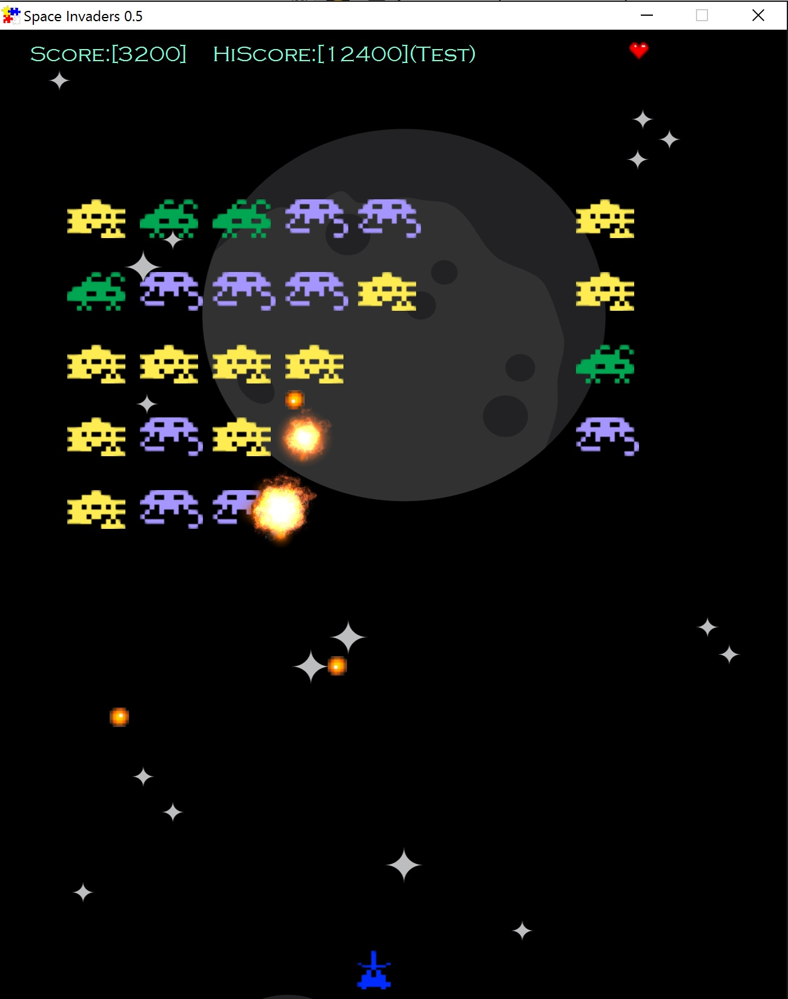
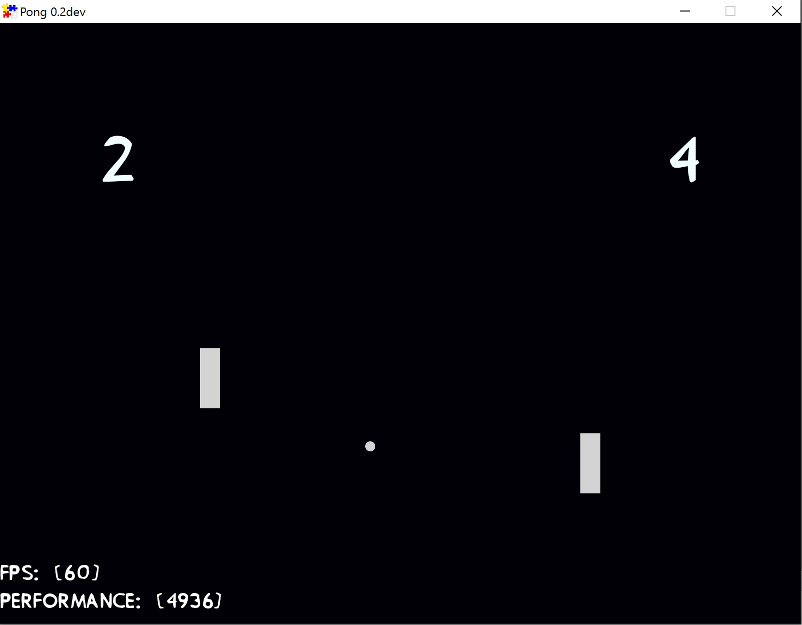
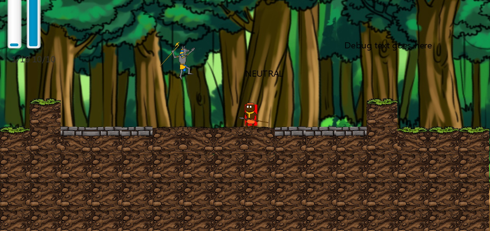

FXGL
Simple and easy to use (hopefully!) JavaFX 8 game library


Use Case
FXGL is perfect for small to medium sized games and for beginner / intermediate programmers in JavaFX. It is primarily aimed at people who wish to learn and practise game development. It also takes care of the common boilerplate code, so it can be used for fast prototyping. For larger projects the library may not be as suitable, whereas advanced programmers will probably want to work with JavaFX directly. If you have a use case (feature) that FXGL doesn't cover, raise an issue, carefully describing the use case.
Prerequisites
Oracle JDK 1.8.0_40+
Build
mvn packageThis will generate FXGL-0.2.0.jar, sources and javadoc.
Setup
Click to select setup steps based on your IDE/build tool.
Setup (Maven)
<repository>
<id>jitpack.io</id>
<url>https://jitpack.io</url>
</repository>
<dependency>
<groupId>com.github.AlmasB</groupId>
<artifactId>FXGL</artifactId>
<version>0.2.0</version>
</dependency>
Directory Structure for FXGL Applications
This matches a typical IDE directory structure. For Maven users source root is "src/main/java" and assets should be in "src/main/resources". This allows easy packaging and deployment, as all assets packaged into jar will continue loading with exactly the same code.
project directory (typically project name)
src (source code directory)
assets
textures (image files ".png", ".jpg")
audio (audio files ".wav")
music (music files ".mp3")
text (text files ".txt")
data (binary data files with custom extensions)
ui/css (stylesheets for customizing UI elements)
ui/fonts (fonts ".ttf", ".otf")
(your packages / code)
Basic Usage / Examples
The samples/ folder will be constantly updated to include demonstrations of various features.
Video Tutorials Playlist - YouTube Link
The videos will walk you through the basics.
Notes
If certain parts of documentation are ambiguous/incorrect/missing please let me know or raise an issue.
Any testing, feedback and bug reports are welcome
3D features and port to mobile will be considered in the future.
This is only a hobby / side project (for the time being anyway), so the development progress may vary. Most of the code follows "some" design principles and practices, but overall I wouldn't consider the code to be high quality and as it is now it doesn't have much production value.
Latest Release Features
FXGL 0.2.0 supports:
- Full JavaFX Integration (FXGL is built on top of JavaFX 8)
- JBox2D Physics Engine Integration (v.2.3.0, https://github.com/jbox2d/jbox2d)
- Basic Game Loop
- Basic Logging
- Basic Performance Monitor
- Basic Audio System
- Basic Particle System with Canvas Rendering
- Multi-Layer Rendering
- Dynamic Texture Manipulation (Texture Processing + Sprite Sheet Animations)
- Entity Component/Control System
- Time Management System
- Global and Scoped Event System
- Input Bindings (Keys + Mouse)
- Automated Asset Management (".png", ".jpg", ".wav", ".mp3", ".txt", ".ttf/.otf" custom binary formats)
- Automated Collision Handling (also unified, physics collisions are hooked into FXGL)
- Automated Target Screen Resolution (+Fullscreen)
- Networking (both TCP and UDP)
- AI Pathfinding (A star search)
- Quick Time Events (QTE) (API INCOMPLETE)
- Intro Video / Animation (also supports custom intro)
- Few Built-in Styles of Main Menu + Game Menu (also supports custom Main Menu and Game Menu)
- Custom Modifiable UI elements (Dialogs, Bars, Buttons, etc)
- Custom Global CSS to use with existing menus / UI elements
- Saving / Loading System
- User Profiles (Save/Load/Restore Game Settings)
- Other minor game dev features
Next Release Features
The issue tracker contains information about possible features to be added in the next release.
Few Simple Projects So Far





 Sprites can be found on http://opengameart.org/
Sprites can be found on http://opengameart.org/
Contact
Email: almaslvl@gmail.com
Google+